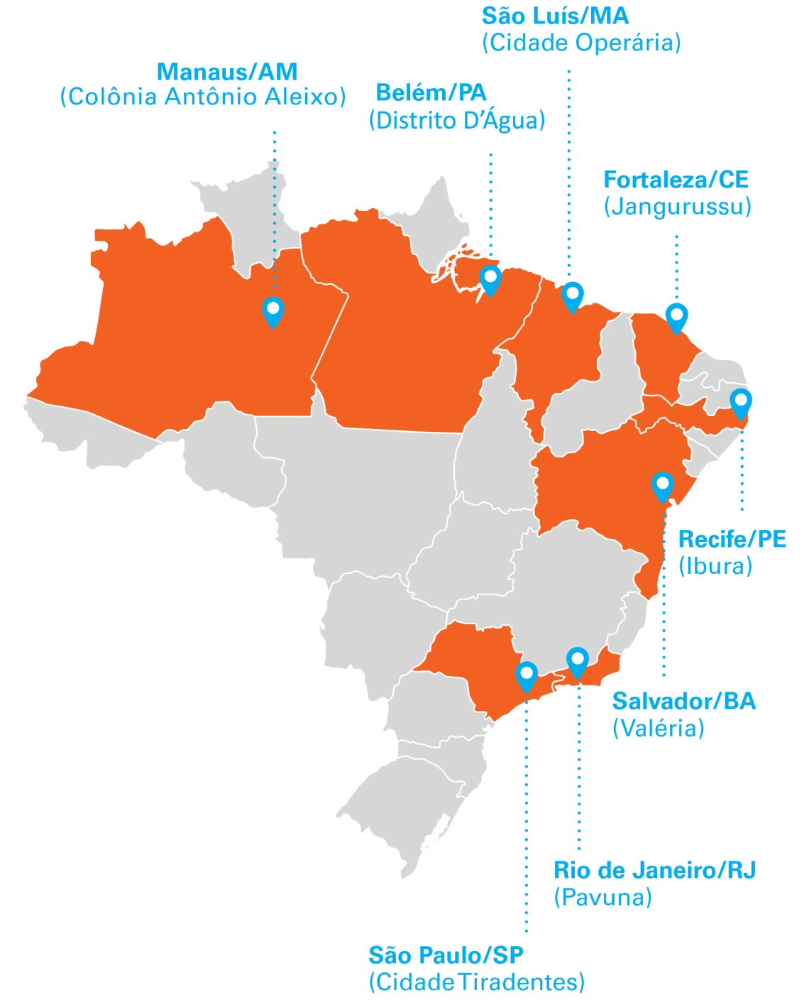

#AgendaCidadeUNICEF é uma iniciativa do UNICEF em parceria com prefeituras municipais de grandes centros urbanos brasileiros para promover direitos e oportunidades das crianças e dos adolescentes mais vulneráveis, contribuindo com a prevenção de violências em sua vida. Na sua primeira edição (2022-2024), a iniciativa em Belém, Fortaleza, Manaus, Recife, Rio de Janeiro, Salvador, São Luís e São Paulo.
Junto com organizações da sociedade civil, empresas, além de com as próprias comunidades e os adolescentes, a #Agenda propõe uma soma de esforços para que cada criança, cada adolescente esteja na escola, aprendendo; cresça com oportunidades de inclusão produtiva; tenha acesso a serviços de proteção contra violências; além de ter sua saúde integral e seu bem-estar assegurados.
A #AgendaCidadeUNICEF é um movimento de pessoas para fortalecer a cultura de inclusão, não discriminação, não violência. Queremos entender as necessidades e os desafios nos territórios mais vulneráveis, buscar soluções e desenvolver potências a partir das próprias crianças, dos próprios adolescentes, familiares, profissionais e técnicos dos serviços públicos, além de lideranças comunitárias, artistas, empresários e comunicadores.
Rumo à Agenda 2030 e ao alcance dos seus Objetivos de Desenvolvimento Sustentável (ODS), a #AgendaCidadeUNICEF é também um movimento de cidades, para cidades. As capitais participam de uma comunidade de soluções, na qual trocam experiências e aprendizados, conectando-se a um esforço global de construir cidades que protejam e garantam oportunidades a suas crianças e seus adolescentes.
A #AgendaCidadeUNICEF abre caminhos de direitos e oportunidades para crianças e adolescentes por meio de estratégias integradas, que ajudam a reduzir e prevenir violências no seu dia a dia. Integra metodologias de diferentes áreas (Educação, Saúde, Proteção, Inclusão Socioprodutiva) e promove a mobilização social e o monitoramento de indicadores relacionados à área da infância e da adolescência.
EDUCAÇÃO - Busca Ativa Escolar e Trajetórias de Sucesso Escolar
INCLUSÃO SOCIOPRODUTIVA - informação, capacitação e geração de oportunidades aos jovens (conheça a iniciativa 1MiO para saber mais)
PROTEÇÃO CONTRA A VIOLÊNCIA - fortalecer o atendimento a crianças e adolescentes vítimas de violência e efetivar metodologias e mecanismos de informação sobre casos de violência
ATENÇÃO À SAÚDE MENTAL - Pode Falar! – plataforma de ajuda em saúde mental para adolescentes entre 13 e 24 anos
UNIDADES AMIGAS DA PRIMEIRA INFÂNCIA (Uapi) - estratégias de assistência técnica, capacitação, monitoramento, acompanhamento e certificação, favorecendo o diálogo entre profissionais e famílias com crianças até 6 anos de idade
São oito territórios vulneráveis em oito capitais brasileiras onde moram, ao todo, cerca de 8,2 milhões de crianças e adolescentes (IBGE, 2022).
A iniciativa se desenvolve em cada município por meio das seguintes etapas: